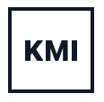

이주여성
안전, 체류, 가족 관계, 차별 대응, 자립 지원을 다룹니다.
About KMI
Korea Migration Institute · 한국이주이민연구원은 이주민과 이주를 직접 경험한 사람들이 중심이 되어 한국 사회의 이민, 다문화, 체류, 노동, 가족, 교육, 돌봄의 문제를 다룹니다.
한국의 많은 이민 관련 기관이 한국인 중심으로 운영되는 현실 속에서, KMI는 당사자의 언어와 경험을 연구, 교육, 상담, 권리 안내의 출발점으로 삼습니다.
Focus Areas
안전, 체류, 가족 관계, 차별 대응, 자립 지원을 다룹니다.
이주 배경 아동과 가족의 교육, 돌봄, 복지 접근성을 살핍니다.
필리핀 등 동남아 출신 비정규 이주노동자의 노동권을 연구합니다.
보호 절차, 정착, 가족 결합, 지역사회 연결을 지원합니다.
한국 사회와 해외 동포 공동체 사이의 권리 이슈를 연결합니다.
외국인 근로자와 돌봄노동자의 고용 안정, 안전, 존엄을 다룹니다.
역사적 기억과 현재의 체류, 권리, 인정 문제를 함께 다룹니다.
잠시 보류 중인 분야로, 향후 연구 범위에 따라 확장합니다.
What We Do

Archive
서울시육아종합지원센터
이주배경 영유아 부모가 한국의 양육 환경과 다문화 가정의 생활 적응 정보를 이해할 수 있도록 지원한 부모교육 프로그램입니다.
그레이스 호텔 서울
이주배경청소년을 지원하는 상담사와 통역사를 대상으로 문화 이해와 현장 소통 역량을 높이기 위한 교육을 진행했습니다.
서울대학교 총장잔디 및 생활과학대학
이주배경 아동과 가족이 함께 참여할 수 있는 돌봄 활동을 통해 학습, 놀이, 관계 형성을 지원했습니다.
전주시 가족센터
전북지역 이주배경 아동·청소년이 지역사회 안에서 참여와 나눔을 경험할 수 있도록 사회공헌 활동을 진행했습니다.
Resources
Contact
연구 협력, 현장 사례 공유, 상담 연계, 자료 요청은 아래 연락처로 문의해 주세요.
Focus Area
What We Do
{kind=link}
{kind=link}
{kind=link}
{kind=link}
{kind=link}
{kind=link}
{kind=link}
{kind=link}
{kind=link}
{kind=link}